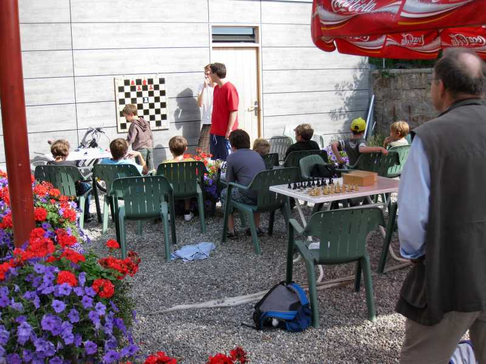
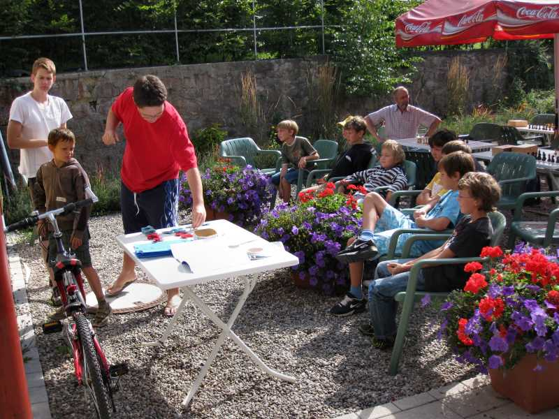
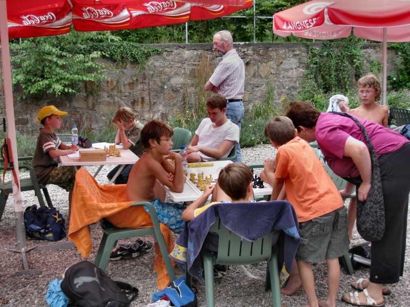

03.08.10 - 05.08.10
Laufenburger
Kindersommer

Wieder einmal wurde das Freibad vom Schach beherrscht.

Jochen und Rafael waren gute Anleiter. Heinz hielt sich im Hintergrund bereit,

Nur ganz selten dachte ich, ich müsste auch einmal etwas sagen....

Der zweite Tag war leider der einzige mit richtigem Badewetter...

Bis zum Schluss wurde fleissig gearbeitet. Alle bestanden das Bauerndiplom!
Und so berichtete die Presse (Südkurier vom 06.08.10):